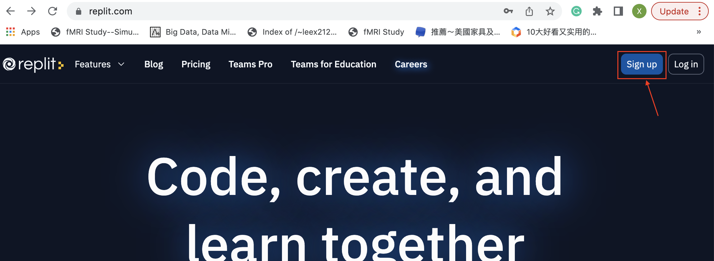
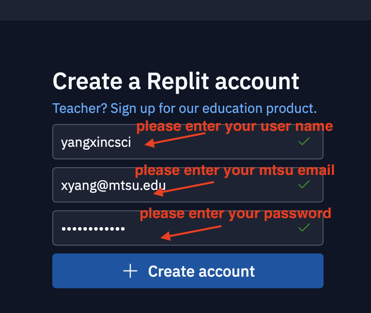
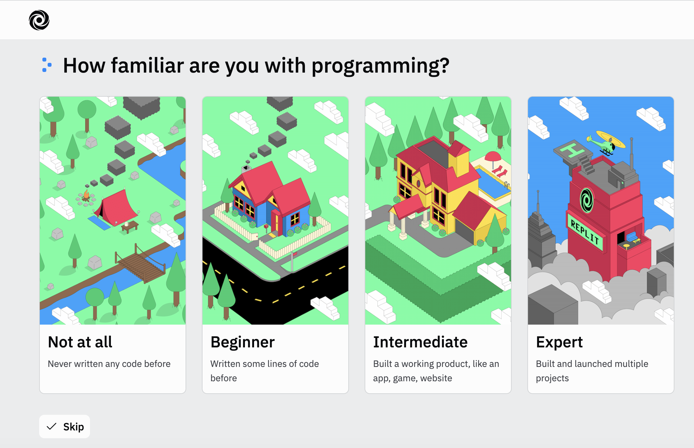
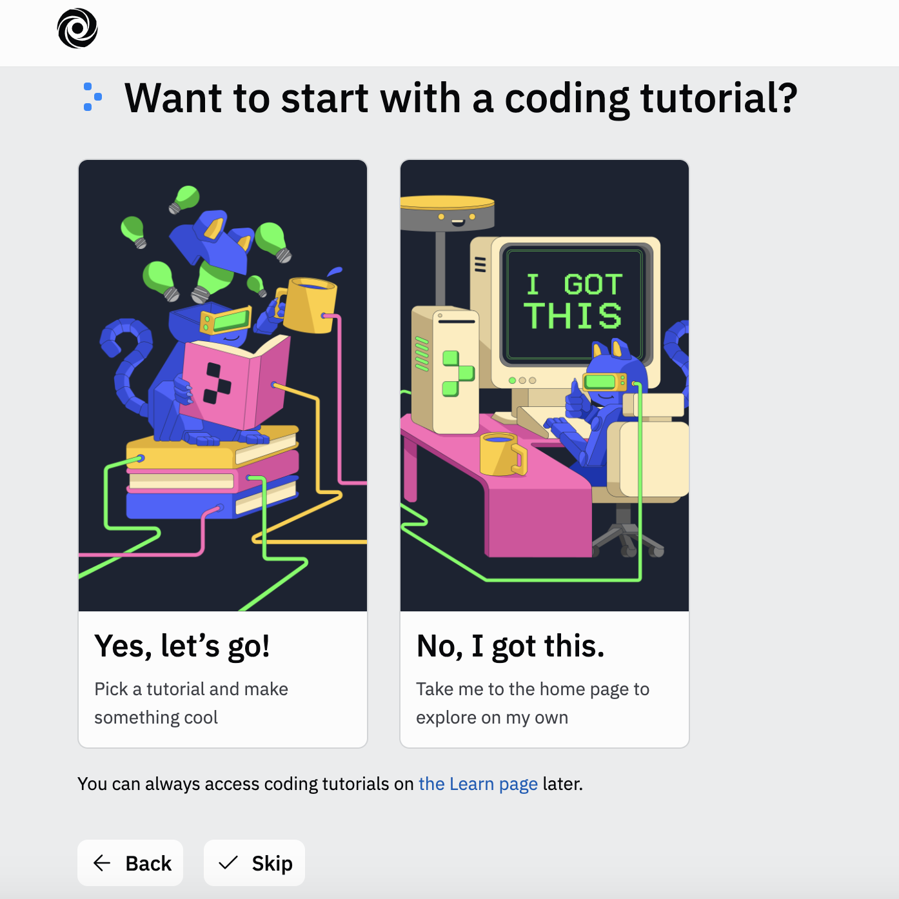
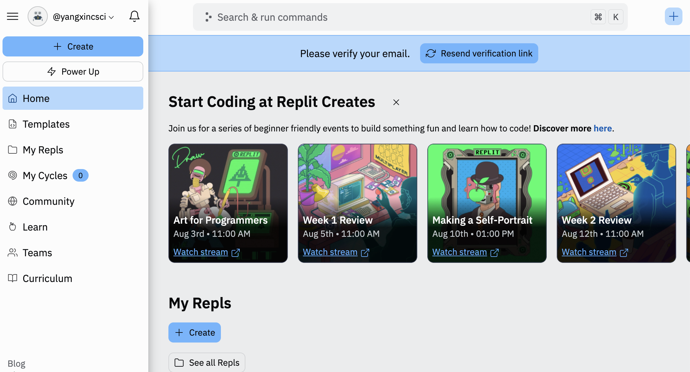
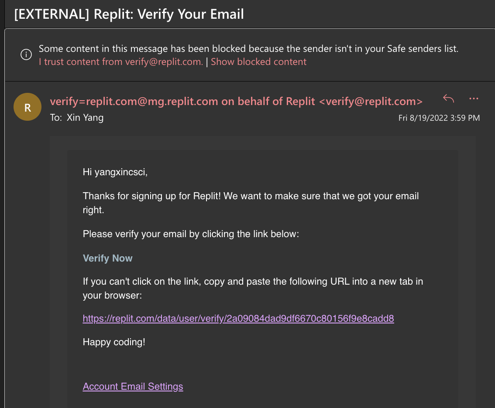
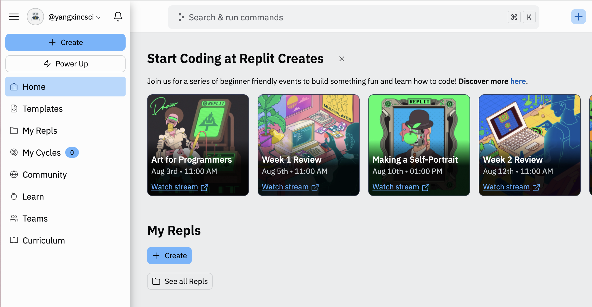
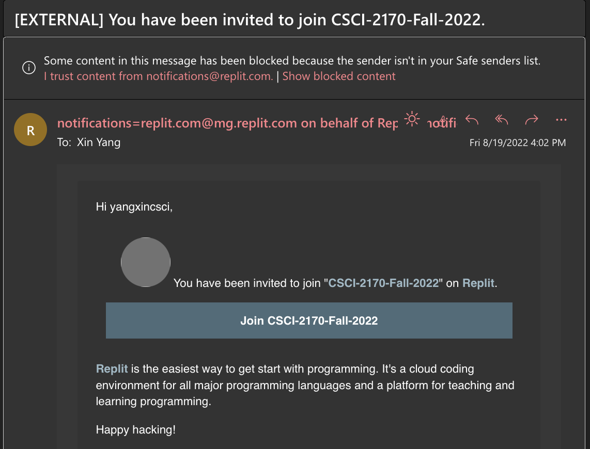
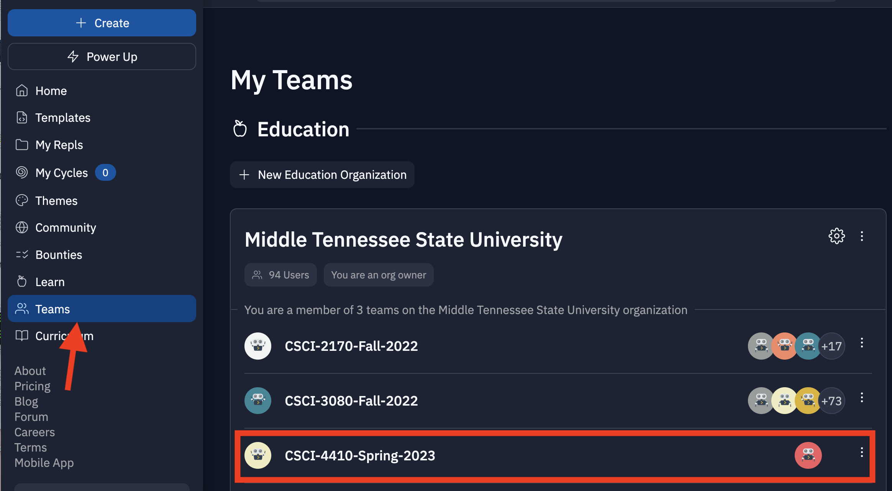
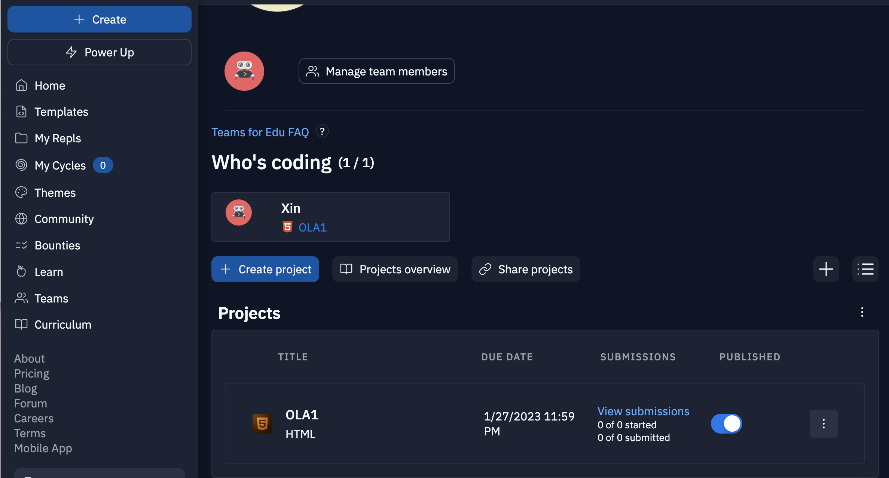

CLA 1: Create a replit account
Replit (rep·lit),is an online IDE (integrated development environment) that can be used with a variety of programming languages, including JavaScript, Python, C++, and so on. Replit's key feature is collaborative coding, the ability to share a Repl with one or many other users and see real-time edits across files, message each other, and debug code together.We are going to use replit as the coding tool for programming projects in CSCI-4410/5410.
Objective:

Step 2: Please create an replit account with your MTSU email

Step 3: You can just click skip for the following two steps:


Step 4: You should see similar page like this after your account is created successfully

Step 5: Please go to your MTSU email to verify your email

Step 6: You should see the similar page like this after the verification is done.

Step 7: Please go to your MTSU email to accept your invitation to join CSCI-4410-Spring-2023 team.

Step 8: Click Teams in the lower left part of your replit page, you should see your team: CSCI-4410-Spring-2023 .

Step 9: Click CSCI-4410-Spring-2023 team, you should see similar page in the following:

Congratulations! You have finished CLA1!
Go to Top